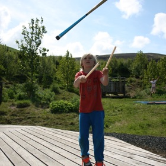
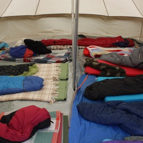
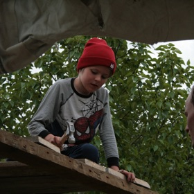

Við viljum gefa ímyndunaraflinu stað í raunveruleikanum. Okkur langar að bjóða börnunum með okkur í heillandi ljóðrænt ferðalag inn í ríki ímyndunaraflsins, stað þar sem við getum á einlægan hátt upplifað náttúruna og reynt á alvöru hugrekki, þor og samhjálp. Þar sem að við getum upplifað okkur sjálf sem einstakling og hluta af heild.
Í nútímanum upplifa börn mest ævintýraheima í gegnum nútímamiðla svo sem sjónvarp og tölvur. Við viljum bjóða börnum upp á raunverulegar upplifanir og það að takast á við sjálfan sig og raunverulegar áskoranir. Í gegnum útiveru og leik, með sögum, leiklist, sirkus, dans, söng og náttúrunni viljum við bjóða ykkur að koma og taka þátt í ævintýrum með okkur.

Sirkus
Sirkusnámskeið fyrir krakka 8 - 16 ára.
Lærðu að leika sirkuslistir í fallegu umhverfi Lækjarbotna undir berum himni. Á námskeiðinu verður farið í undirstöðuatriðin í sirkus. Komdu með og upplifðu að takast á við hið ótrúlega á fallegum stað. Kostnaður er 18.000 kr. á barn.
Sirkusnámskeið yngri krakka fer fram 26. - 30. júní.
Skráning í sirkusnámskeið 8 - 13 ára
Sirkusnámskeið eldri krakka fer fram 12 - 16 ára er 19. - 23. júní.
Skráning í sirkusnámskeið 12 - 16 ára

Sumarbúðir
Fyrir börn á aldrinum 8 - 13 ára. Komdu inn í heim sagna og ævintýra og upplifðu söguna á eigin skinni. Komdu og tjaldaðu með okkur í fallega græna dalnum okkar í heila viku og lifðu og leiktu þér undir þaki heimsins, kveiktu varðeld, eldaðu mat og lifðu í samneyti við þá sem einnig taka sér þessa ferð á hendur. Sumarbúðirnar fara fram 18. - 23. júlí og kosta 32.000 kr. á barn.
Skráning í sumbarbúðir 8 - 13 ára

Leikdagur
Leikur fyrir alla á aldrinum 1 - 100 ára. Við byggjum kofa, tálgum, syngjum og dönsum, steikjum pinnabrauð yfir varðeldi og sigrumst á hinum vondu öflum sem ráfa um landið í kringum nýbyggðu húsin okkar. Þetta er tækifæri til að leika sér saman bæði fullorðnir og börn, upplifa einstaka stemmingu þar sem allir koma saman að byggja og leika sér úti í grasgrænni náttúrunni.
Skráningar á leikdag opna næsta apríl